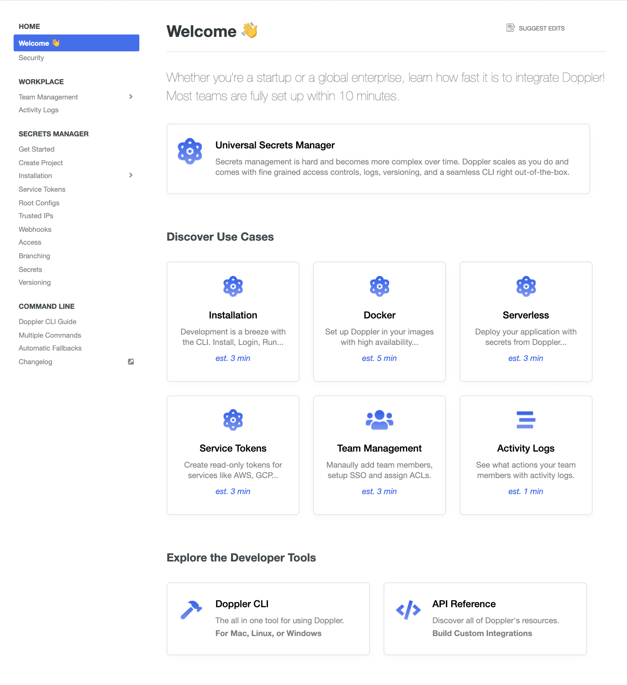
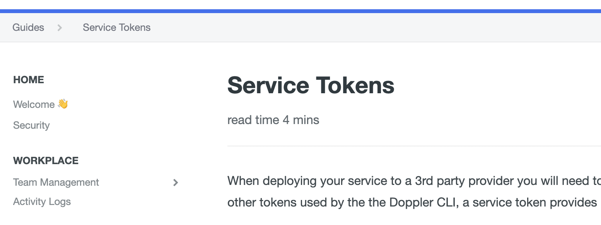
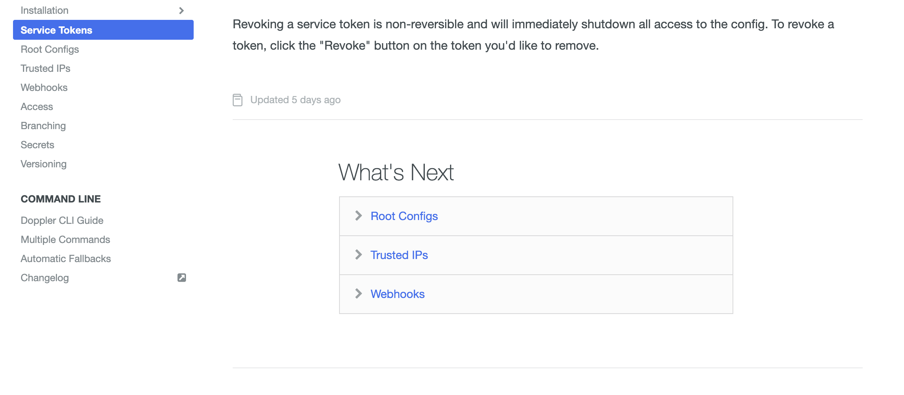

As a YC founder in the Dev Tools space, Doppler CEO Brian Vallelunga realized one day that Doppler’s homegrown developer documentation solution could no longer meet their needs.
Before ReadMe, we had 2 separate documentation hubs in our product that were built in-house. They were a nightmare to maintain, keep in sync, and style. Thankfully, those days are behind us! Brian
Doppler needed a solution that could gracefully handle their top three priorities:
- Look & feel like their brand
- Be very easy to update
- Quickly onboard new customers & answer common questions of existing customers
Brian trialed all the documentation tools out there. After the evaluation, he concluded that using ReadMe could give Doppler customers the best developer experience, thanks to custom styling options, a Suggest Edits feature allowing easy contributions from the Doppler user base, and a personalized, interactive API Explorer
Check out that Style ü§©
Brian carefully crafted styles to give Doppler’s docs a crisp and clean aesthetic. In addition to font and color selection, subtle touches like tastefully styled tables & image borders that highlight on mouse hover add real polish. This depth of styling was enabled thanks to ReadMe’s flexible CSS options.
We wanted Doppler’s docs to feel like an extension of our product, with deep thought put into the user experience and design. This meant keeping things simple, guiding the user when possible, and being on-brand. Brian
Beyond looks, Brian also enriched his content with ReadMe widgets to include lots of screenshots, code samples, videos, and callouts (but only when necessary).
Beware: Callouts are like sirens, the more you hear them down Main Street, the less you will notice them. Brian
Additionally, Brian took the time to make the API Reference section interactive using the ReadMe’s API Designer. This allows Doppler’s customers to make real API calls and observe the response without leaving the documentation.
The API Explorer is fantastic for our users as it allows them to try out our APIs right from their browser. For API window shoppers, it’s a great experience. Brian
Keeping it Fresh ü•¨
Documentation has to be more than interactive to be dynamic. By enabling ReadMe’s built-in Suggest Edits, Doppler customers dynamically contribute updates by offering their revisions directly on a continual basis.
The "Suggest Edits" feature is our favorite. We used to get a ton of support tickets with corrections to our documentation. Using Suggested Edits, our customers can now instantly create a pull request for us with their proposed changes. The user experience on both sides is far more streamlined. Brian
A Warm Welcome ü§ó
The highlight of Doppler’s docs is the welcome page! Brian used ReadMe’s HTML/CSS widget to great effect, creating nine delightfully animated "Journeys" to decrease onboarding time.
There were two use-cases we had: getting new users started on the right path fast and ensuring existing users could find answers to common questions. Brian
The top Journey helps users install the Doppler CLI tool & get a first project setup. Six of the most common use cases occupy the middle. Lastly, the bottom Journeys route users to the full CLI guide and the interactive API Reference section.

The Flow üßò‚Äç‚ôÄÔ∏è
The read time estimates that Brian developed for Journeys proved so useful that he applied them to the page description of all pages, setting the right expectations upfront.

Doppler also makes great use of ReadMe’s What’s Next feature at the bottom of pages to keep customers on track as they work their way through the content.

Measured Outcomes
It’s a major undertaking to produce developer documentation that is cleanly styled, always updated, with a great onboarding experience. But this is one of the best docs we’ve seen and the results speak for themselves:
We hear frequently from our customers that our docs are amazing, in large part due to Journeys, made possible thanks to ReadMe’s custom HTML/CSS widgets. It has reduced our support ticket load by 35% and decreased our onboarding times from hours to minutes. Brian
We love working with the Doppler team and are amazed at the success they’ve achieved with their docs. Brian’s story and the many other stories like it are what motivate us to get up each day and keep working towards making ReadMe the perfect documentation platform!